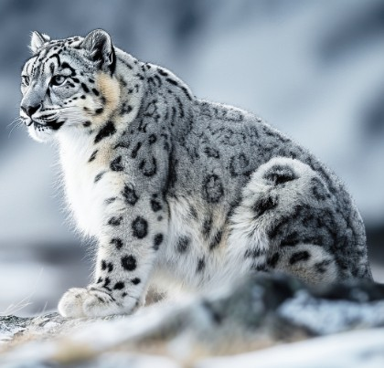
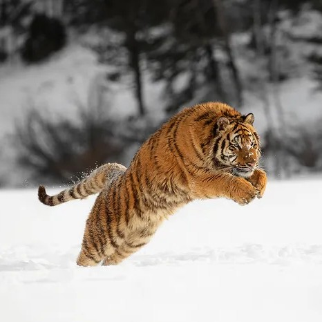
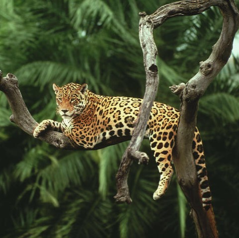

Snow Leopard:
The Snow Leopard (Panthera uncia), also known as the Ounce or Irbis,
is a magnificent and elusive big cat uniquely adapted to life in the
high mountains. It inhabits the rugged alpine and subalpine zones of
Central and South Asia, from Afghanistan to China, at elevations
between 3,000 and 5,500 meters. Its most striking feature is its
thick, smoky-gray coat patterned with dark rosettes and spots,
providing perfect camouflage among the rocky slopes. Unlike other
big cats, it cannot roar due to different vocal anatomy.
This apex predator possesses remarkable adaptations for its harsh
environment: an exceptionally long, thick tail for balance and
warmth, enlarged nasal cavities to heat frigid air, and wide,
fur-covered paws that act as natural snowshoes. Primarily solitary
and crepuscular, it preys on mountain ungulates like blue sheep and
ibex. Classified as Vulnerable by the IUCN, it faces critical
threats from habitat loss, poaching, and conflict with herders, with
an estimated 4,000-6,500 individuals remaining in the wild.

Siberian Tiger:
The Siberian Tiger (Panthera tigris altaica), also known as the Amur
Tiger, is the world's largest and most majestic big cat. Native to
the remote, snowy forests of the Russian Far East and parts of China
and North Korea, it is a powerful symbol of wilderness. Males can
reach over 3 meters in length and weigh up to 300 kilograms, with a
thick, pale orange coat and fewer, lighter stripes compared to other
subspecies—an adaptation for camouflage in its wintry habitat.
This apex predator is critically adapted to its harsh environment,
with a layer of fat for insulation and large paws that function as
snowshoes. It primarily hunts large ungulates like deer and wild
boar. Once on the brink of extinction, intense conservation efforts
have helped its wild population slowly recover to an estimated
500-600 individuals, yet it remains an Endangered species, primarily
threatened by poaching and habitat loss.

Jaguar:
The Jaguar (Panthera onca) is the largest big cat in the Americas
and the third-largest in the world, renowned for its immense power
and striking beauty. It is instantly recognizable by its
golden-yellow coat covered in distinctive dark rosettes, which often
feature smaller spots inside—a pattern unique among big cats. An
apex predator with the strongest bite force relative to its size of
any cat, it is a master of ambush, capable of piercing the skulls or
shells of its prey, including caimans and turtles.
Primarily solitary and crepuscular, it inhabits a range of
environments, from dense rainforests and swamps to scrublands, with
a historical range stretching from the southwestern United States to
Argentina. Unlike most cats, jaguars are strong swimmers and are
often associated with water. Their conservation status is Near
Threatened, with key populations surviving in the Amazon Basin,
facing ongoing threats from deforestation, poaching, and
human-wildlife conflict.